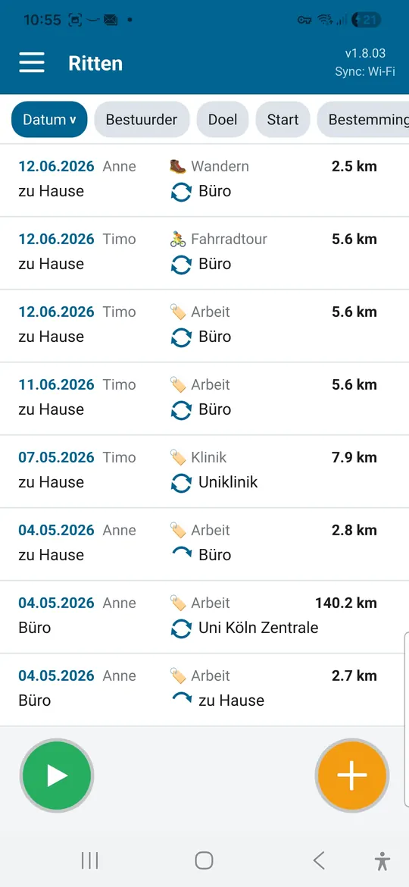
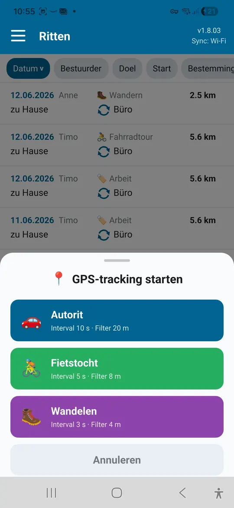
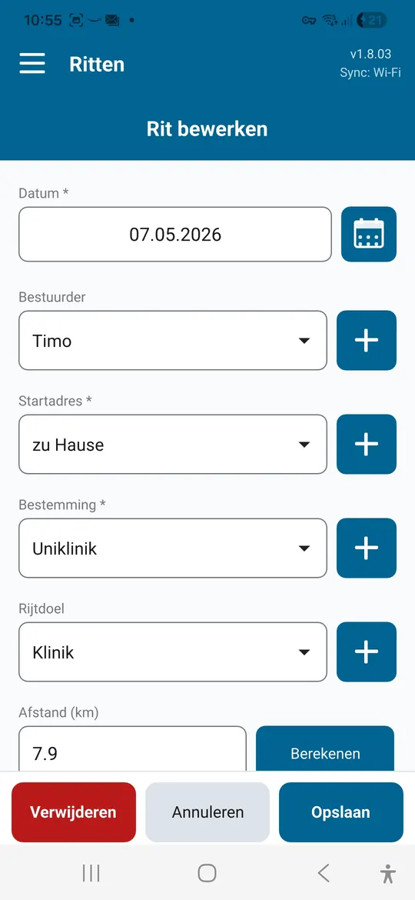
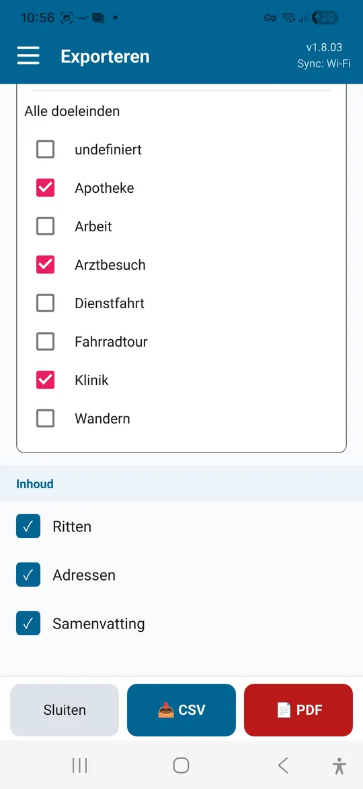

Zzp'ers en kleine bedrijven
Klantbezoeken en zakelijke ritten vastleggen met doel en afstand. Het maandoverzicht is een basis voor facturatie en belasting.
Rittenboek-app voor Android en Windows
Driver's Log legt ritten vast met datum, bestuurder, doel, vertrek en bestemming en berekent de afstand automatisch. Voor zakelijke ritten, doktersbezoeken en vrijetijdstochten, met export als PDF of CSV.
| Datum | Bestuurder | Doel | Vertrek → Bestemming | km |
|---|---|---|---|---|
| 06-10 | Anne | Klantbezoek | Kantoor → Weber bv | 38,4 |
| 09-10 | Tim | Dokter | Thuis → Praktijk dr. Klein | 12,6 |
| 12-10 | Anne | Fietstocht | Rivieroever → Binnenstad | 24,1 |
| Totaal | 75,1 |

Een rittenboek helpt overal waar ritten aangetoond, gedeclareerd of gewoon bijgehouden moeten worden.
Klantbezoeken en zakelijke ritten vastleggen met doel en afstand. Het maandoverzicht is een basis voor facturatie en belasting.
Ritten naar artsen, ziekenhuizen en therapie verzamelen als bewijs voor de belastingaangifte of een vergoeding.
Ritten voor de vereniging, vrijwilligerswerk of mantelzorg vastleggen en in één keer declareren.
De tocht via gps opnemen, begin en eind benoemen en de afstand bewaren.
De gelopen afstand via gps vastleggen, ook met de telefoon in je zak.
Let op bij de belastingdienst: voor bijvoorbeeld een auto van de zaak gelden strenge eisen aan een rittenregistratie. Overleg bij twijfel met je belastingadviseur of je registratie volstaat.
Alles wat een rittenboek nodig heeft, zonder papierwerk.
Vertrek- en bestemmingsadressen bewaar je in het adresboek en kies je daarna met één tik. Suggesties komen van OpenStreetMap.
De afstand tussen vertrek en bestemming wordt via een route berekend, voor heen, terug of beide.
Voor autorit, fietstocht of wandeling. De opname loopt op de achtergrond door en vult daarna het ritformulier in.
Elke rit aan een persoon koppelen, bijvoorbeeld als een gezin of team een auto deelt.
Klantbezoek, dokter, boodschappen: maak je eigen doelen en sorteer de lijst daarop.
Per maand of heel jaar en per doel, met rittenlijst, samenvatting per traject en adreslijst.
Dagelijkse back-up in een map naar keuze. Die blijft bewaard, ook als de app verwijderd wordt.
Nederlands, Duits, Engels, Frans en Spaans.
Wifi-sync · Pro
Je Android-apparaat en je Windows-pc synchroniseren de ritten rechtstreeks via je wifi. Een rit die je op het ene apparaat opslaat, verschijnt kort daarna op de andere.





Afbeeldingen met voorbeeldgegevens.
Driver's Log is gratis. Een eenmalige in-app-aankoop ontgrendelt Pro, zonder abonnement.
| Functie | Free | Pro |
|---|---|---|
| Ritten | tot 25 | onbeperkt |
| Gps-registratie | ✓ | ✓ |
| Export als PDF en CSV | ✓ | ✓ |
| Meerdere bestuurders en eigen doelen | ✓ | ✓ |
| Automatische back-up | ✓ | ✓ |
| Wifi-sync tussen apparaten | – | ✓ |
| Windows-app met synchronisatie | – | ✓ |
Google Play toont de actuele prijs in je eigen valuta.
De Windows-app is gratis. Voor synchronisatie met je telefoon heeft de Android-app Pro nodig.
Download voorWindowsAlleen op je eigen apparaten, in een lokale database. Er is geen account en geen cloudopslag.
Alleen voor adressuggesties en de automatische afstandsberekening. Ritten vastleggen en wifi-sync werken ook offline.
Al je bestaande ritten blijven bewaard. Nieuwe ritten voeg je daarna toe met Pro.
De export is een goede basis voor aangifte en declaraties. Of hij volstaat, hangt af van je situatie en de regels die voor jou gelden.